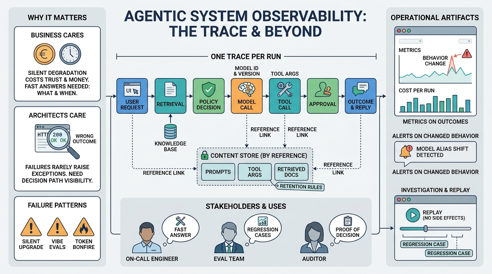

Part VIII — EVIDENCE: Evaluation and Observability
Observability: Traces, Metrics and Investigating Failures
AI-assisted: written with Claude Code, images generated with the Gemini API. How this works

Image generated by Google Gemini (gemini-3-pro-image-preview)